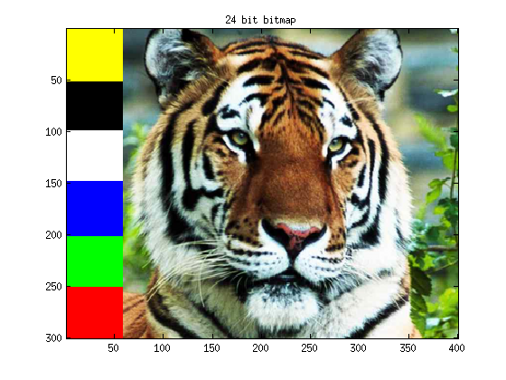
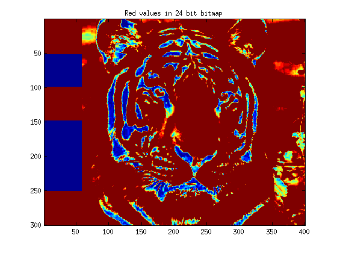
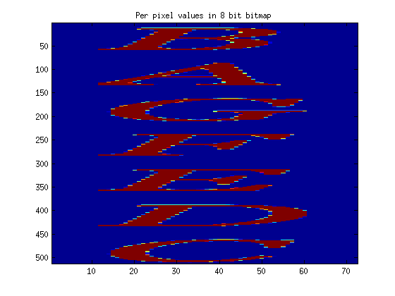
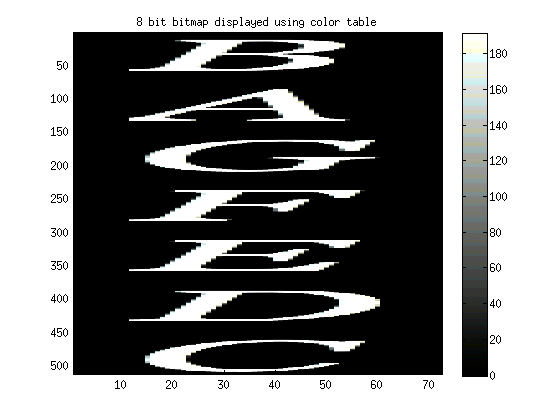
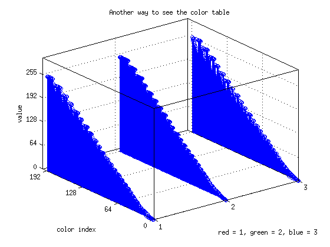
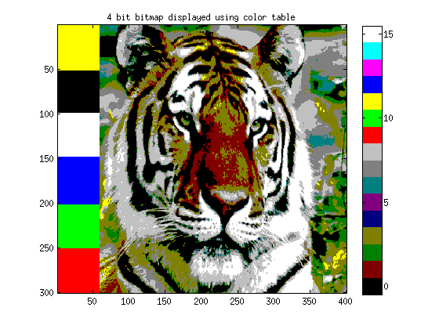
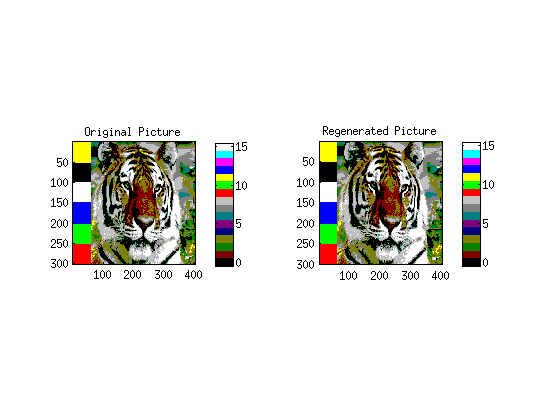

Contents
- How to use this file
- Getting 24 bit data
- View the image
- Manipulate the data in the image
- Getting 8 bit data
- Displaying without the color table
- Displaying WITH the color table
- More about the color table
- Even smaller bitmaps
- Writing data to coe files for putting them on the fpga
- Turning a 2D image into a 1D memory array
%6.111 Image Color Table MATLAB deme %Edgar Twigg bwayr@mit.edu %4/1/2008 (But I swear this file isn't a joke)
How to use this file
%Notice how %% divides up sections? If you hit ctrl+enter, then MATLAB %will execute all the lines within that section, but nothing else. You can %also navigate quickly through the file using ctrl+arrow_key
Getting 24 bit data
%So when you look at a 24 bit bitmap file, the file specifies three 8 bit %values for each color, 8 each for red, green, and blue. [picture] = imread('tiger24.bmp');
View the image
%This command image will draw the picture you just loaded figure %opens a new window image(picture) %draws your picture title('24 bit bitmap') %gives it a title so you don't forget what it is
Manipulate the data in the image
%So now you have a matrix of values that represent the image. You can %access them in the following way: % %picture(row,column,color) % %Remember that MATLAB uses 1-based indexes, and Verilog uses 0! % %Also, you can use MATLAB's slice operator to do nifty things. %picture(:,:,1) would return a 2D matrix with the red value for every row and %column. % %picture(:,1,2) would return a 1D matrix with the green value for every row %in the first column. %This is how MATLAB indexes the colors RED = 1; GREEN = 2; BLUE = 3; %So if we wanted to see the red values of the image only, we could say figure image(picture(:,:,RED)) title('Red values in 24 bit bitmap') %Because the image we gave matlab above specifies only one value per pixel %rather than usual three (red,blue,green), MATLAB colors each pixel from %blue to red based on the value at that pixel.
Getting 8 bit data
%When you store an 8 bit bitmap, things get a little more complicated. Now %each pixel in the image only gets one 8 bit value. But, you need to send %the monitor an r,g, and b! How can this work? % %8 bit bitmaps include a table which specifies the rgb values for each of %the 8 bits in the image. % %So each pixel is represented by one byte, and that byte is an index into a %table where each index specifies an r, g, and b value separately. % %Because of this, now we need to load both the image and it's colormap. [picture color_table] = imread('letter_notes_converted.bmp');
Displaying without the color table
%If we try to display the picture without the colormap, the image does not %make sense figure image(picture) title('Per pixel values in 8 bit bitmap')
Displaying WITH the color table
%So to display the picture with the proper color table, we need to tell %MATLAB to set its colormap to be in line with our colorbar. The image %quality is somewhat reduced compared to the 24 bit image, but not too bad. figure image(picture) colormap(color_table) %This command tells MATLAB to use the image's color table colorbar %This command tells MATLAB to draw the color table it is using title('8 bit bitmap displayed using color table')
More about the color table
%The color table is in the format: % %color_table(color_index,1=r 2=g 3=b) % %So to get the r g b values for color index 3, we only need to say: disp(' r g b for color 3 is:') disp(color_table(3,:)) %disp = print to console %Although in the bitmap file the colors are indexed as 0-255 and each rgb %value is an integer between 0-255, MATLAB images don't work like that, so %MATLAB has automatically scaled them to be indexed 1-256 and to have a %floating point value between 0 and 1. To turn the floats into integer %values between 0 and 256: color_table_8bit = uint8(round(256*color_table)); disp(' r g b for color 3 in integers is:') disp(color_table_8bit(3,:)) %Note that this doesn't fix the indexing (and it can't, since MATLAB won't %let you have indexes below 1) %another way to look at the color table is like this (don't worry about how %to make this graph) figure stem3(color_table_8bit) set(gca,'XTick',1:3); set(gca,'YTick',[1,65,129,193,256]); set(gca,'YTickLabel',[' 0';' 64';'128';'192';'255']); set(gca,'ZTick',[0,64,128,192,255]); xlabel('red = 1, green = 2, blue = 3') ylabel('color index') zlabel('value') title('Another way to see the color table')
r g b for color 3 is:
0.0039 0.0039 0
r g b for color 3 in integers is:
1 1 0
 Even smaller bitmaps
%You can extend what we did for 8-bit bitmaps to even more compressed %forms, such as this 4-bit bitmap. Now we only have 16 colors to work with %though, and our image quality is significantly reduced: [picture color_table] = imread('tiger4.bmp'); figure image(picture) colormap(color_table) colorbar title('4 bit bitmap displayed using color table')
Writing data to coe files for putting them on the fpga
%You can instantiate BRAMs to take their values from a file you feed them %when you flash the FPGA. You can use this technique to send them %colortables, image data, anything. Here's how to send the red component %of the color table of the last example red = color_table(:,2); %grabs the red part of the colortable scaled_data = red*255; %scales the floats back to 0-255 rounded_data = round(scaled_data); %rounds them down data = dec2bin(rounded_data,8); %convert the binary data to 8 bit binary #s %open a file output_name = 'color_table_red_note_text.coe'; file = fopen(output_name,'w'); %write the header info fprintf(file,'memory_initialization_radix=2;\n'); fprintf(file,'memory_initialization_vector=\n'); fclose(file); %put commas in the data rowxcolumn = size(data); rows = rowxcolumn(1); columns = rowxcolumn(2); output = data; for i = 1:(rows-1) output(i,(columns+1)) = ','; end output(rows,(columns+1)) = ';'; %append the numeric values to the file dlmwrite(output_name,output,'-append','delimiter','', 'newline', 'pc'); %You're done!
Turning a 2D image into a 1D memory array
%The code above is all well and good for the color table, since it's 1-D %(well, at least you can break it into 3 1-D arrays). But what about a 2D %array? We need to turn it into a 1-D array: picture_size = size(picture); %figure out how big the image is num_rows = picture_size(1); num_columns = picture_size(2); pixel_columns = zeros(picture_size(1)*picture_size(2),1,'uint8'); %pre-allocate a space for a new column vector for r = 1:num_rows for c = 1:num_columns pixel_columns((r-1)*num_columns+c) = picture(r,c); %pixel# = (y*numColumns)+x end end %so now pixel_columns is a column vector of the pixel values in the image %just to make sure that we're doing things correctly regen_picture = zeros(num_rows,num_columns,'uint8'); for r = 1:num_rows for c = 1:num_columns regen_picture(r,c) = pixel_columns((r-1)*num_columns+c,1); end end figure subplot(121) image(picture) axis square colormap(color_table) colorbar title('Original Picture') subplot(122) image(regen_picture) axis square colormap(color_table) colorbar title('Regenerated Picture')